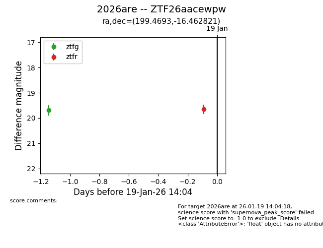
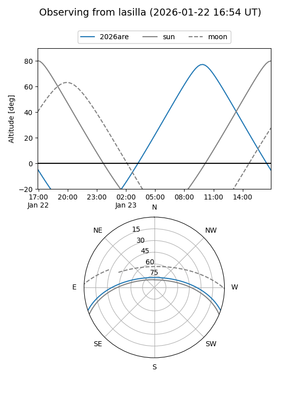
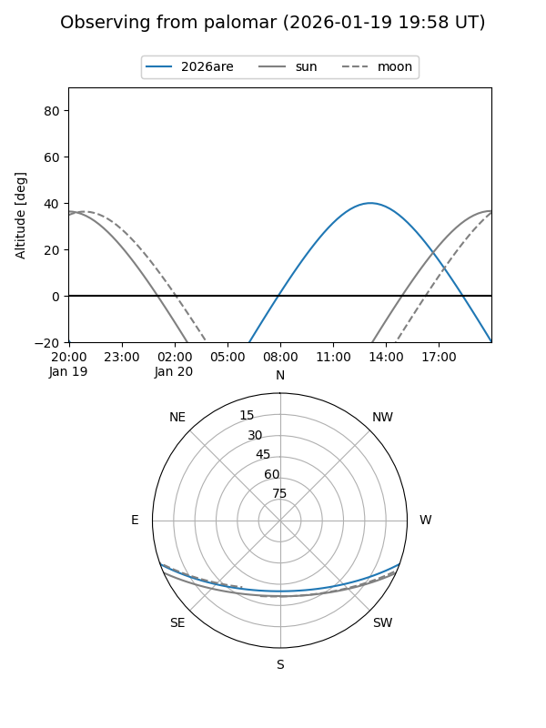
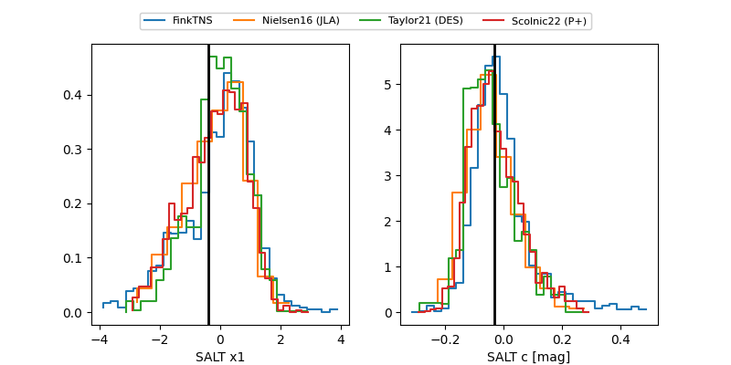

2026are
Target 2026are at 2026-01-22 11:16
Aliases and brokers:
FINK: link
Lasair: link
ALeRCE: link
TNS: link
YSE: link
alt names
ZTF26aacewpw (ztf,fink_ztf)
2026are (tns,yse)
Coordinates:
equatorial (ra, dec) = 199.4693,-16.46282
equatorial (HMS+DMS) = 13:17:52.64,-16:27:46.16
galactic (l, b) = (312.0656,+45.93951)
Flags:
Photometry:
last ztfg=19.51, ztfr=19.66
2 ztfg, 1 ztfr detections
Lightcurve

Visibility


Additional plots
